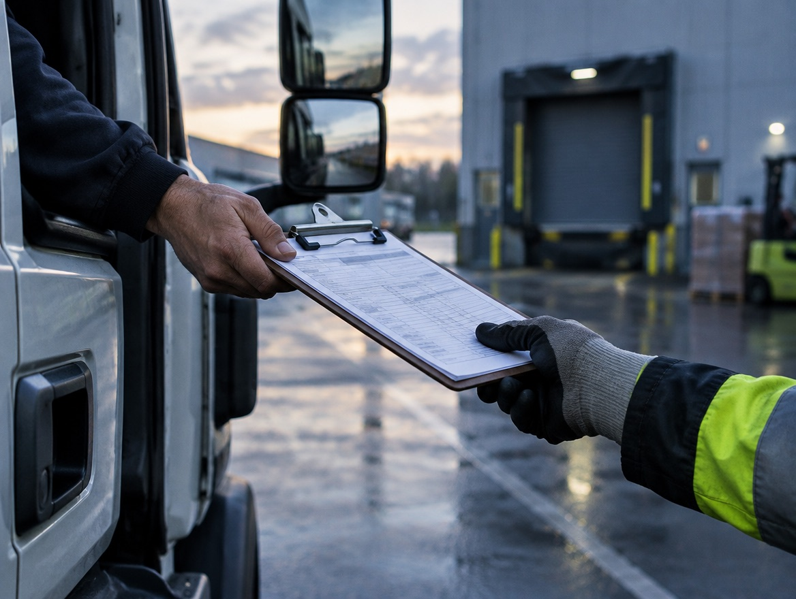
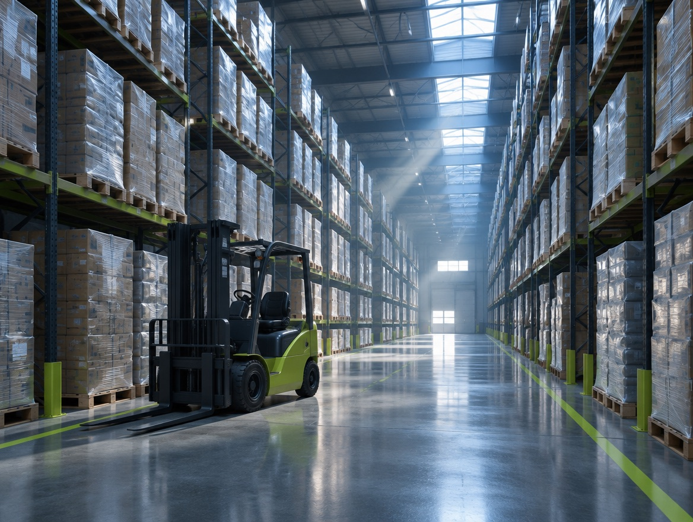
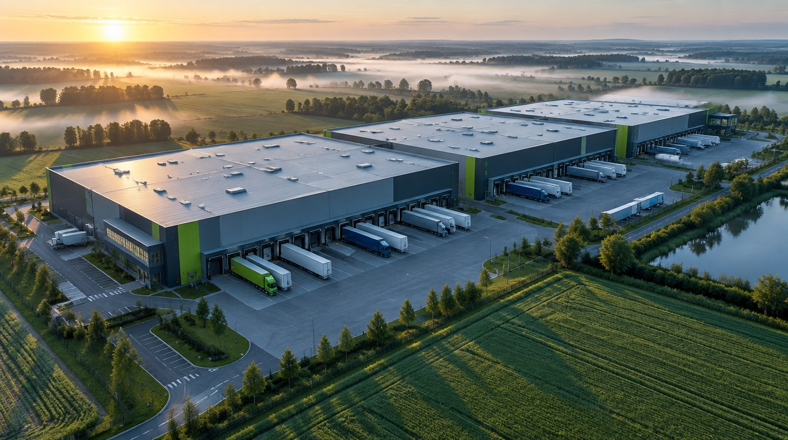

01
Вантажі в дорозі
Захист самого товару — незалежно від того, чи винен перевізник.
Логістичну компанію рідко захищає один договір. Ризик залежить від того, що ви перевозите, де зберігаєте вантаж, хто за нього відповідає в кожен момент часу і що записано у ваших договорах. Спершу розкладаємо цю картину, а вже потім виходимо на ринок.
Захист самого товару — незалежно від того, чи винен перевізник.

Ваші зобов’язання перед замовником у межах договору й конвенції CMR.

Будівля, товар на зберіганні та відповідальність перед орендарями й клієнтами.
Власник, оператор і орендар працюють в одній будівлі, але відповідають за різне. Поліс, який закриває одного, не закриває іншого.

Пожежа пошкоджує комплекс. Страховик власника виплачує відшкодування — і йде з регресом до винної сторони. Нею може виявитися ваш же орендар або оператор.
Під час навантаження пошкоджено вантаж клієнта. Страховик клієнта виплачує йому відшкодування і виставляє регрес вам — як винній стороні.
Пожежа в сусіднього орендаря. Під час гасіння ваш товар залито водою. Прямого винуватця немає — претензію пред’являти нема кому.
Страховик потерпілого виплачує відшкодування і отримує право вимоги до винного. Ця вимога приходить до учасника ланцюга, який часто взагалі не вважав себе стороною ризику — і в нього немає ані поліса, ані резерву під таку суму.
Тому програму для складу ми будуємо не від будівлі, а від договорів: хто кому і за що відповідає, коли право власності переходить, що записано в договорі зберігання й оренди.
Пожежа, залиття, пошкодження при навантаженні.
Клієнт або орендар отримує відшкодування за своїм полісом.
Страховик заміщує потерпілого у вимозі до винної сторони.
Якщо відповідальність не застрахована, сума лягає на власні кошти компанії.
Найчастіша хибна впевненість у логістиці: «перевізник застрахований, отже вантаж захищений».
за кілограм пошкодженої ваги брутто — межа відповідальності перевізника при міжнародному автомобільному перевезенні, якщо вартість вантажу не оголошено в накладній окремо.
Конвенція про договір міжнародного дорожнього перевезення вантажів (CMR), стаття 23. SDR — розрахункова одиниця МВФ, її курс змінюється.
Це не стандартне покриття: воно погоджується окремо, залежить від маршруту й місця зберігання, а умови на ринку змінюються. Перевіряємо їх на етапі формування вимог, а не після підписання.
Для легкого та дорогого вантажу — електроніки, фармацевтики, компонентів — ліміт за вагою покриває лише частину реальної вартості. Різницю несе власник вантажу.
Страхування відповідальності захищає перевізника від вимог замовника. Страхування вантажу захищає сам товар — і працює навіть тоді, коли перевізник не винен або звільнений від відповідальності.
Той самий порядок, за яким ми ведемо складні складські та транспортні програми.
Розбираємо маршрути, вантажі, склади, контрагентів і договори — де саме виникає ваша відповідальність.
Описуємо, що має бути покрито, з якими лімітами й винятками, і що для вас критично.
Виходимо на страхові та перестрахові компанії, для яких ваш ризик релевантний. Складські ризики беруть не всі.
Звіряємо остаточний текст із домовленостями до підписання — саме тут з’являється більшість неприємних сюрпризів.
Ведемо договір увесь строк дії та супроводжуємо збитки, включно з регресними вимогами.
Розміщення складських ризиків складніше за типове корпоративне страхування: учасників багато, можлива сума збитку сягає вартості всього комплексу, а частина страхових компаній такі об’єкти не приймає. Конкретні ризики, ліміти, франшизи та виключення визначаються програмою і договором страхування. Вибір страхової компанії залишається за вами — ми показуємо ринок і пояснюємо відмінності.
Маршрути, склади, договори з клієнтами — почнемо з того, де у вашій операції насправді виникає ризик. Перша зустріч безоплатна, онлайн або особисто в Києві.